Clea Joy Ramos - E&D I - January 2021
For this investigation, we each took apart an electronic object in order to analyze and learn more about electronic components.
| 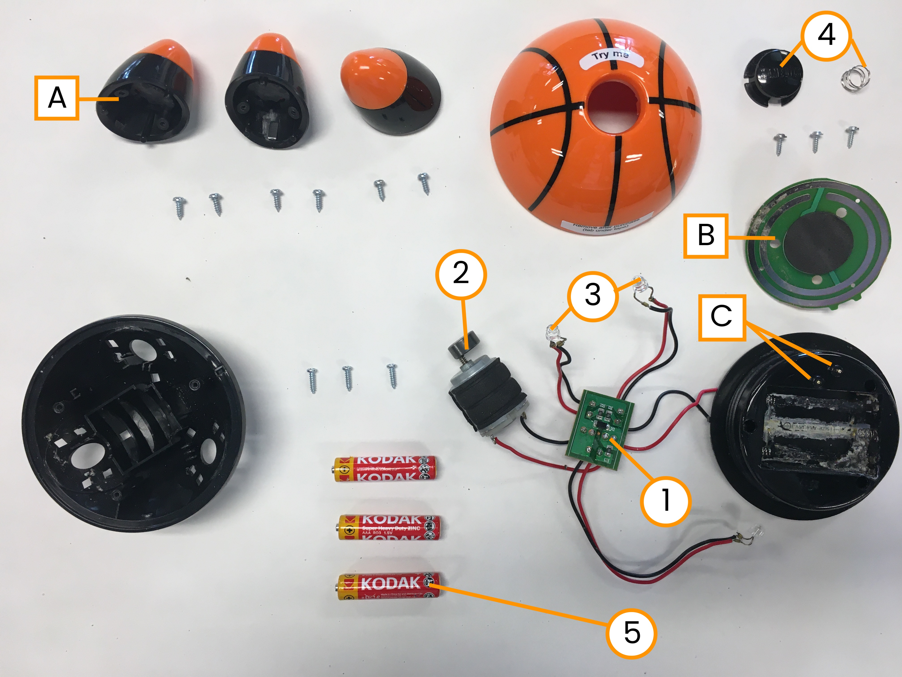 |
|---|
A printed circuit board (PCB) is a plastic and glass board with embedded copper lines that directs electricity. PCB allows for electricity to flow in one direction, from the energy source to attached electrical components. This PCB is connected to the the motor, the LEDs, and the battery holder via soldered wires. The back of the circuit board is labeled that show where the wires lead (ex/"LED2" leads to an LED while "MOTO" leads to the motor). The PCB is also has resistors tabled R1 and R2 that limit the flow of electrons in the circuit.
| 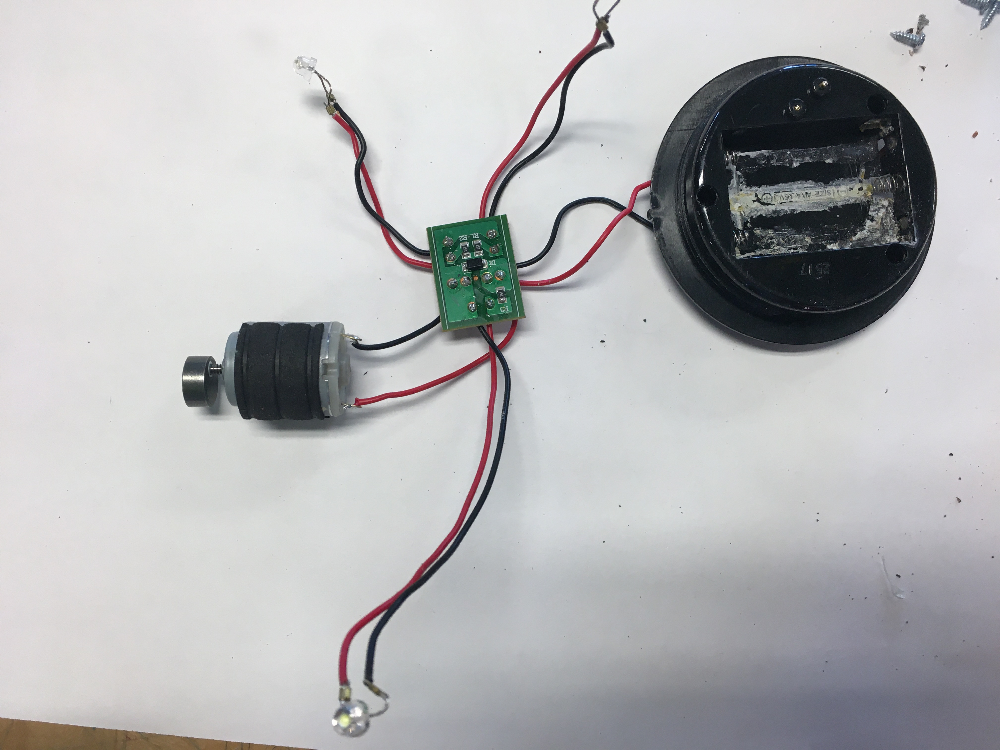 | 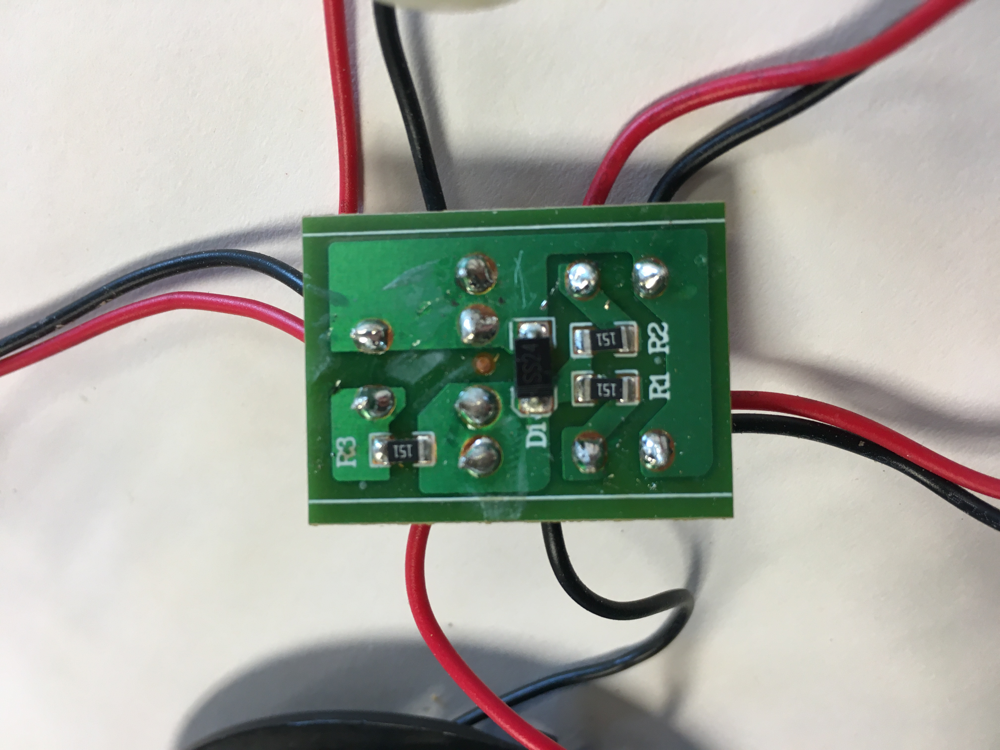 | 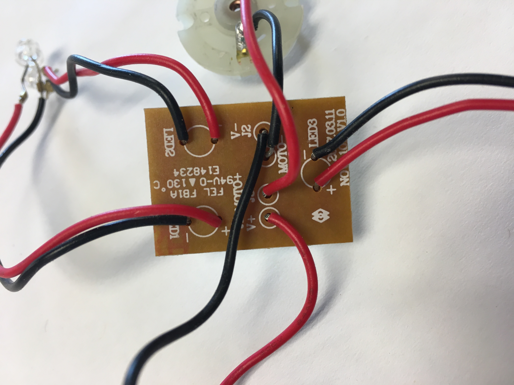 |
|---|---|---|
| Circuit Board with electrical components | Circuit Board Front | Circuit Board Back |
This Brushed DC Motor generates the vibrating motion of the massager, and it is composed of coils (in the interior of the motor) and two spring-loaded brushes (in the cap of the motor). When current is passed through the motor, the coils act as an electromagnet magnet; they rotate within the motor creating a spinning motion. The brushes on each side of the cap help to maintain the continuous current as the coils spin.
| 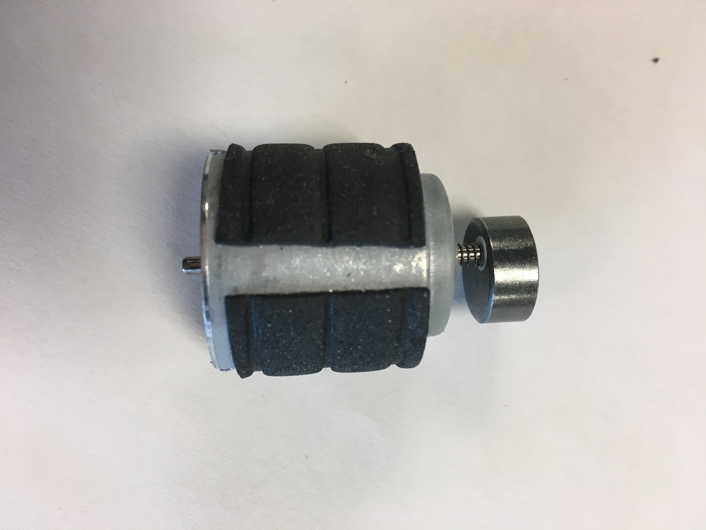 | 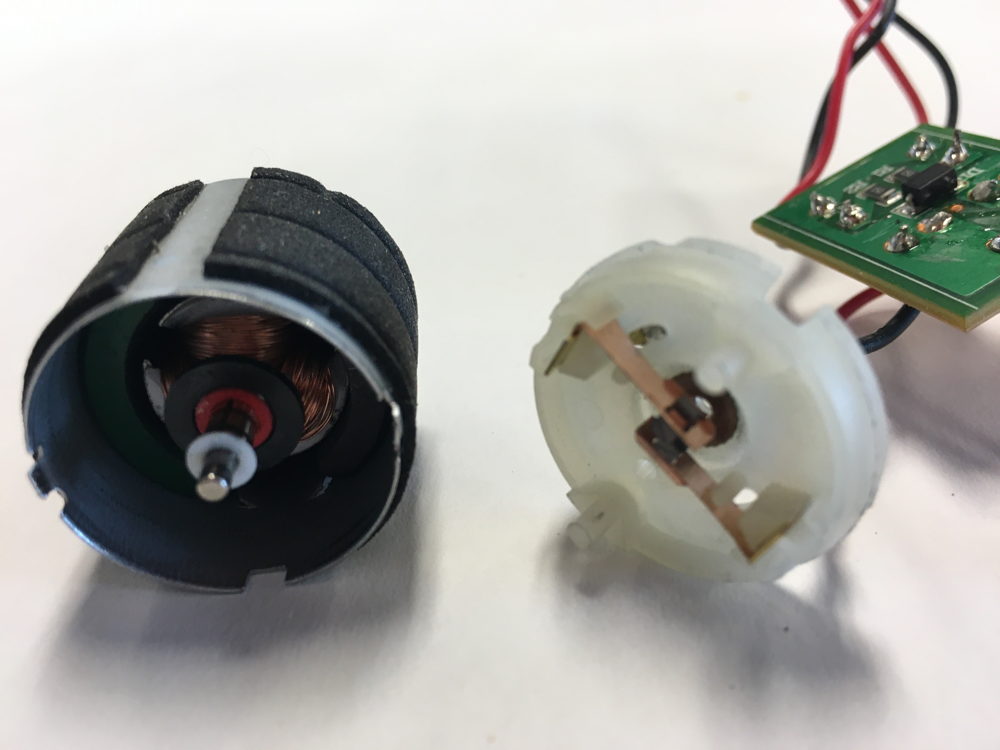 |
|---|---|
| Brushed DC Motor (side view) | Interior of Motor and cap |
Light emitting diode that allows for the flow of current in one direction. Each of the LEDs are connected to the PCB via wires. There is one LED in each foot of the massager (figure A). When the massager is turned on, the LEDs glow.
| 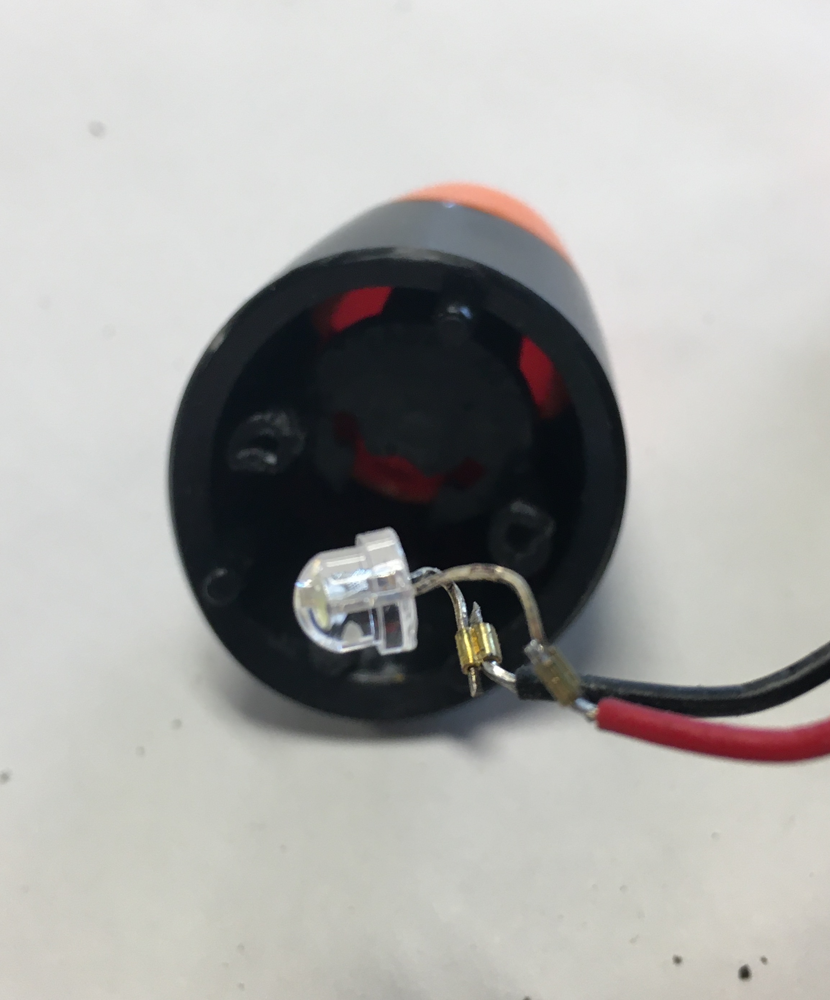 |
|---|
| LED from inside of the Massager leg |
When the button pushed once, the massager vibrates and the LEDs in the feet turn on. When the button is pushed again, the massager turns off. The plastic button sits on a metal spring that pushes on a circular board lined with metal strips (figure B). The metal strips come in contact with metal pins on the battery holder (figure C), which are connected to the PCB and the batteries via wires. This completes the electrical circuit, allowing for current to flow.
| 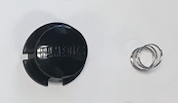 |
|---|
| Plastic button and spring |
Batteries store chemical energy and convert it to electrical energy. When a battery is attached to conductors like the springs and wires in the battery holder, chemical reactions occur which cause electrons to flow from the negative end of the battery to the PCB, the LEDs, the motor, and back to the positive end of the battery.
| 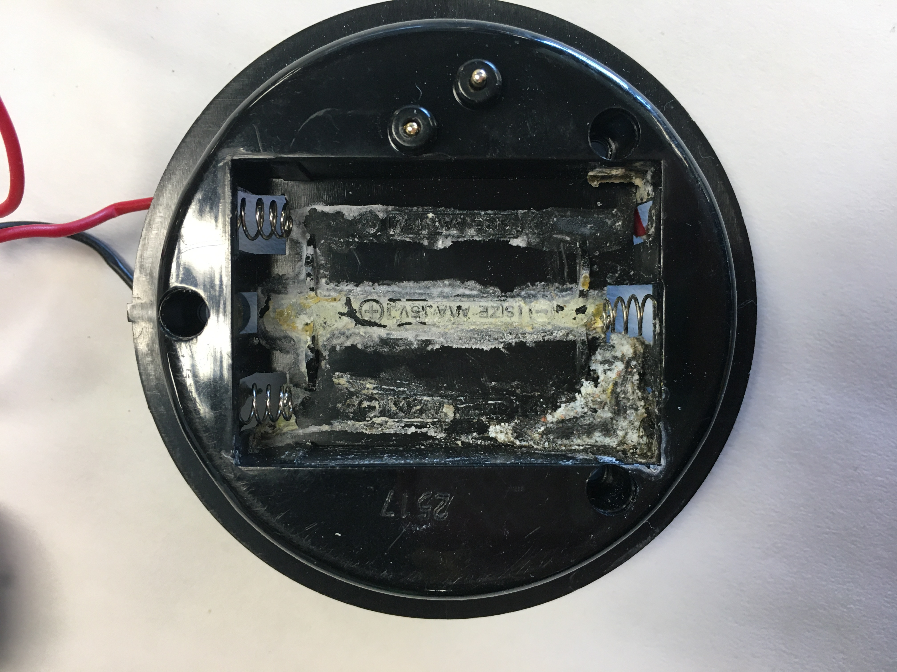 | 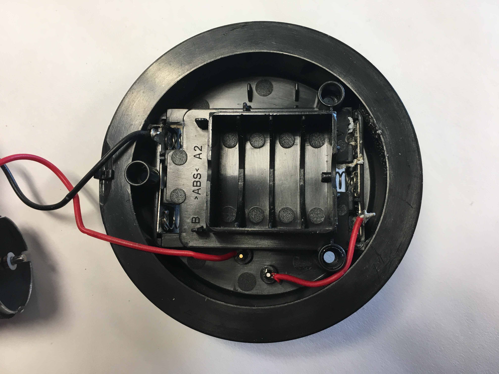 | 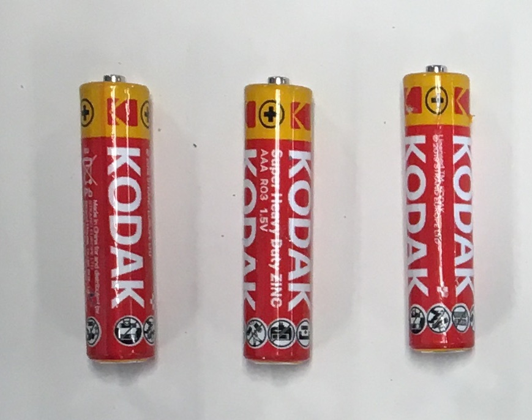 |
| Front of Battery holder | Back of Battery holder | Batteries |
|---|